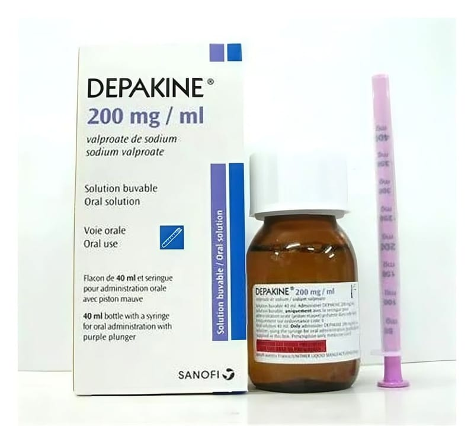

Depakin %20 Oral Çözelti, 40 ml

Ne için kullanılır
KT · Bölüm 1• DEPAKİN % 20 oral çözelti, kokusuz, renksiz veya çok hafif sarı renkte berrak bir sıvıdır. • DEPAKİN, antiepileptikler (epilepsi tedavisinde kullanılan ilaçlar) adı verilen bir ilaç grubuna dahildir. • DEPAKİN, 100 mL çözeltide 20 mg sodyum valproat içerir. • DEPAKİN, 40 mL’lik amber renkli cam şişe içinde sunulmaktadır ve sıvı şeklindedir. 2 mL’lik derecelendirilmiş enjektör damlalıkla beraber ambalajlanmıştır. • DEPAKİN, epilepsi (sara) adı verilen bir merkezi sinir sistemi hastalığının tedavisinde kullanılan bir ilaçtır. Birçok epilepsi türünün tedavisinde etkilidir. • DEPAKİN, lityumun uygun olmadığı ya da yan etkileri nedeniyle kullanılamadığı durumlarda, bipolar bozuklukla ilişkili aşırı coşkulu ve enerjik dönemlerin (manik epizodların) tedavisinde kullanılabilir.